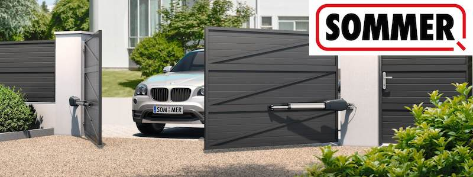
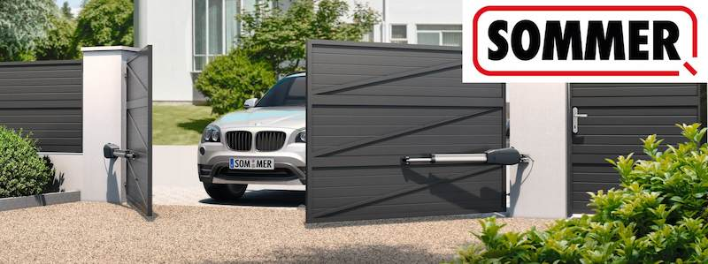

Dlaczego AuraMetall?

Kompleksowa obsługa klienta – Od pierwszego kontaktu oferujemy darmową wycenę i profesjonalny pomiar. Na każdym etapie realizacji możesz liczyć na nasze fachowe doradztwo.
Trwałość na lata – Nasze konstrukcje stalowe i aluminiowe to inwestycja na całe życie. Kupujesz raz, a my gwarantujemy wytrzymałość i solidność przez długie lata. wszystkie produkty są ocynkowane i malowane proszkowo

Indywidualne podejście – Realizujemy projekty na wymiar, w pełni dopasowane do potrzeb i gustu klienta. Twój płot, brama czy balustrada będą niepowtarzalne.

Wysoka jakość materiałów – Korzystamy wyłącznie z najlepszych materiałów, które zapewniają estetykę, odporność na warunki atmosferyczne i trwałość.
Kompleksowa logistyka – Oferujemy transport zakupionych produktów, dzięki czemu nie musisz martwić się o organizację dostawy.
Profesjonalny montaż – Nasz doświadczony zespół zapewnia szybki i precyzyjny montaż, gwarantując bezpieczeństwo i estetykę końcowego efektu.

Doświadczenie i zaufanie – Posiadamy wieloletnie doświadczenie w branży, co przekłada się na jakość usług i zadowolenie setek klientów.

Konkurencyjne ceny – Oferujemy doskonały stosunek jakości do ceny, zapewniając inwestycję, która się opłaca.
Ekologia i nowoczesność – W procesie produkcji stosujemy technologie przyjazne środowisku, a nasze projekty są zgodne z najnowszymi trendami rynkowymi.

2-letnia gwarancja – Wszystkie nasze produkty objęte są 2-letnią gwarancją, co daje Ci pewność jakości i dodatkowe poczucie bezpieczeństwa.

Demontaż – Oferujemy również demontaż starego ogrodzenia, bram, balustrad, także nie musisz się o nic martwić.
Bez zaliczki


 
